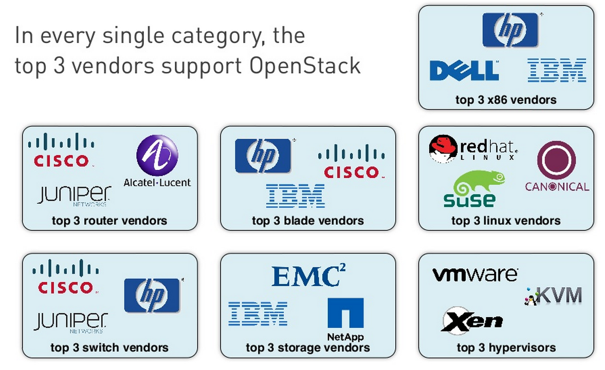

¿Por qué OpenStack?
Software libre para la nube
Alberto Molina Coballes / @alberto_molina y José Domingo Muñoz Rodríguez / @Pledin_JD

Cloud Computing. Características
- Servicio disponible de forma automática y a demanda
- Accesible a través de la red
- Modelo multi-tenancy
- Se comparten los recursos con otros usuarios
- Debe garantizarse aislamiento y seguridad entre usuarios
- Los recursos se agrupan en pools
- Elasticidad
- Pago por uso
... as a Service
Software as a Service (SaaS)
Aplicación como servicio en la nube
- Utilizado por cualquier usuario
- Ampliamente implantado
- Ejemplos: Servicios de Google, Office365
Platform as a Service (PaaS)
Plataforma de desarrollo web en la nube
- Utilizado por desarrolladores de software
- Se proporciona toda la plataforma de desarrollo y despliegue de una aplicación al desarrollador
- Ejemplos: Google App Engine, Windows Azure, Heroku, Openshift, CloudFoundry
Infrastructure as a Service (IaaS)
Capacidades de cómputo y almacenamiento como servicio en la nube
- Utilizado principalmente por administradores de sistemas
- Se proporciona principalmente capacidad de cómputo y diversos modos de almacenamiento
- Ejemplos: Amazon Web Services, Joyent, Windows Azure, Rackspace Cloud Servers, Google Compute Engine

Fuente: ad-hoc.net/blogs
IaaS público
Una empresa proporciona este servicio a terceros
Principales ventajas
- Reducción de costes
- Elasticidad
Principales inconvenientes
- La seguridad, confidencialidad de los datos y disponibilidad de los servicios dependen de una empresa externa
- Usuario cautivo del proveedor (Vendor lock-in)
Amazon Web Services
- Pionero y gran dominador en IaaS pública
- Gran variedad de servicios: EC2, S3, Glacier, CloudFormation, RDS y un largo etcétera
- SDKs:
- Android
- iOS
- Java
- JavaScript
- .NET
- PHP
- Python
- Ruby
- APIs son estándares de facto
- Lleva la iniciativa en IaaS
Ejemplo de servicio en IaaS público
Servicio web de vídeo bajo demanda
Problema: Requitos de hardware muy variables con grandes picos y valles
Alto coste en infraestructura tradicional
Solución: Clúster con un número de nodos variable en el tiempo y que se ajuste a la demanda
- Se incluyen balanceadores para repartir la carga
- Se crean de forma automática nuevos servidores cuando se precisa
- Cuando baja la demanda, se eliminan los servidores que sobren.
Más allá del cloud público
Cloud privado
Cloud híbrido
Software libre para IaaS
- OpenStack
- OpenNebula
- CloudStack
- Eucalyptus
OpenStack
“Plataforma de cloud computing hecha con software libre para desplegar nubes públicas y privadas, desarrollada con la idea de ser sencilla de implementar, masivamente escalable y con muchas prestaciones”
Principios fundacionales
- Licencia Apache 2.0, no existe versión "enterprise"
- Proceso de diseño abierto
- Repositorios públicos de código fuente
- Todos los procesos de desarrollo deben estar documentados y ser transparentes
- Orientado para adoptar estándares abiertos
- Diseño modular que permite flexibilidad mediante el uso de APIs
Respaldo de grandes empresas
Fuente: cloudscaling
Componentes principales de OpenStack
| Nombre | Equivalente en Amazon WS | Función |
|---|---|---|
| Horizon | Console | Panel web de gestión |
| Nova | EC2 | Gestión de instancias |
| Cinder | EBS | Almacenamiento de volúmenes |
| Keystone | - | Autenticación y autorización |
| Swift | S3 | Almacenamiento de objetos |
| Glance | VM Import/Export | Gestión de imágenes para las instancias |
| Neutron | VPC | Redes virtuales |
Demo 1: OpenStack Horizon
Conceptos
- Imagen: Imagen de sistema preconfigurado que se utiliza como base para crear instancias. Dentro del cloud podemos encontrar diferentes imágenes para cada tipo de instacia que se quiera utilizar.
- Instancia: Clon de una imagen que se crea a demanda del usuario en uno de los nodos del cloud.
- Un sabor (flavor) define para una instancia el número de CPUs virtuales, la RAM, si dispone o no de discos efímeros, etc.
Conceptos
- IP fija: Dirección IP con la que se crean las instancias y que se utiliza para comunicación interna.
- IP flotante: Dirección IP que puede asociarse a diferentes instancias con el fin de acceder a ellas desde fuera.
- Grupo de seguridad: Reglas de cortafuegos (iptables) que controlan el acceso a las instancias mediante la dirección IP flotante.
Utilización de una instancia
Creación de una instancia
- Elegir la imagen que vamos a instanciar.
- Elegir el sabor que va a tener la instancia.
- Asignar el grupo de seguridad con el que va a trabajar la instancia.
- Elegir la clave RSA que nos va a posibilitar el acceso a la instancia.
- Elegir la red interna (o redes) a la que va a estar conectada la instancia.
- Asignar una IP flotante
Demo 2: OpenStack CLI
Lanzar una instancia
#!/bin/bash
echo "Reservamos una ip flotante que posteriormente asignaremos a la \
instancia para acceder"
nova floating-ip-create ext_net
echo "Veamos la lista de imágenes"
nova image-list
echo "Veamos la lista de sabores"
nova flavor-list
echo "Las redes que tenemos definidas"
nova net-list
echo "Creamos una instancia desde la imágen Debian 7.2, con claves ssh \
(openwebinars), conectada a la red interna y que se llama prueba_bash"
nova boot --flavor 1 \
--image 9715a365-3b56-40b0-a30a-0ba030347cf5 \
--key-name openwebinars \
--nic net-id=d8d4d80e-923f-47fc-ac88-b9079328080b \
prueba_bash
echo "Asignamos la IP flotante que habiamos reservado a la instancia creada"
echo "nova add-floating-ip 'id_instancia' 'ip_flotante'"
Demo 3: OpenStack Python library
#!/usr/bin/python
# -*- coding: utf-8 -*-
import time
from novaclient.v1_1 import client
from credentials import get_nova_creds
creds = get_nova_creds()
nova = client.Client(**creds)
print "Reservamos una IP flotante"
floating_ip = nova.floating_ips.create(nova.floating_ip_pools.list()[0].name)
print floating_ip.ip
print "Elegimos la imagen de Debian Wheezy"
image = nova.images.find(name="Debian 7.2 (Wheezy)")
print "Elegimos el sabor m1.tiny"
flavor = nova.flavors.find(name="m1.tiny")
print "Seleccionamos la red"
network = nova.networks.find(label="red interna de openwebinars")
print "Creamos una instancia con los parámetros anteriores"
server = nova.servers.create(name = "prueba_python",
image = image.id,
flavor = flavor.id,
network = network.id,
key_name = "openwebinars")
while server.status != 'ACTIVE':
time.sleep(0.5)
server = nova.servers.get(server.id)
print "Asociamos la IP flotante a la instancia"
server.add_floating_ip(floating_ip)
¿Qué más podemos hacer?
- Crear instantáneas de las instancias
- Añadir volúmenes (dispositivos de bloques) a las instancias
- Utilizar almacenamiento de objetos
- Redimensionar las instancias
- Configurar redes complejas
- Registrar la utilización
- Automatizar la creación y configuración de instancias
- ...
Aviso a navegantes
Utilizar esto implica algo más que cambiar de herramientas
Esto va más de devops que de sysadmins
¿Por qué OpenStack?
- Porque es libre y abierto
- Por el respaldo que tiene el proyecto
- Porque incluye gran cantidad de funcionalidades
- Porque es extensible y adaptable
- Porque si aún no es la plataforma de cloud más completa, todo indica que lo será muy pronto
- Porque facilita utilizar otras muchas tecnologías punteras: Ceph, SDN, Hadoop
- Porque comienza a haber demanda laboral: Indeed trends
Me gusta, ¿por dónde empiezo?
¿Por qué OpenStack?
Software libre para la nube
Alberto Molina Coballes / @alberto_molina y José Domingo Muñoz Rodríguez / @Pledin_JD